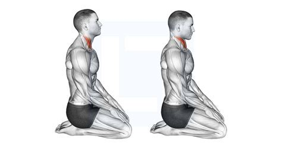
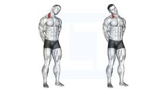
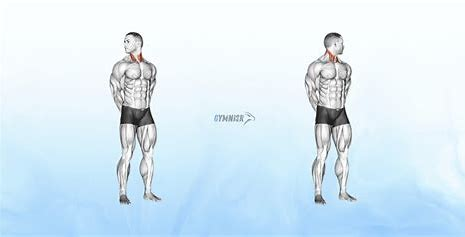
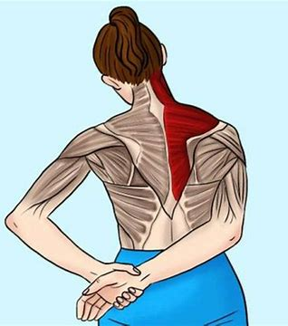
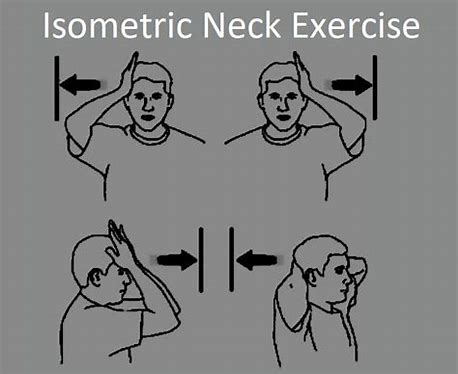
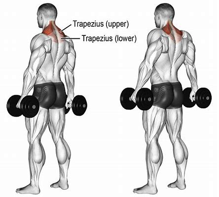

| 1 |
Chin Tucks |
Sit upright and gently tuck your chin in towards your chest. |
 |
| 2 |
Neck Side Stretch |
Slowly tilt your head towards one shoulder until you feel a stretch. |
 |
| 3 |
Neck Rotations |
Gently turn your head left and right, holding for a few seconds. |
 |
| 4 |
Upper Trapezius Stretch |
Sit upright, gently pull your head sideways for a deep stretch. |
 |
| 5 |
Isometric Neck Resistance |
Press your palm against your forehead and resist movement. |
 |
| 6 |
Shoulder Shrugs |
Raise your shoulders up towards your ears and relax. |
 |